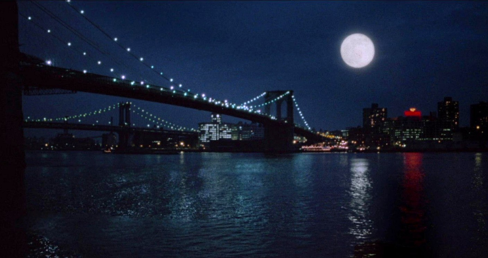

Greenwich Village
Dinner and late supper
Il Gran Lunario
Ristorante Italiano
La bella luna, every night.

Cosmo’s moon, over the bridge to Brooklyn.Secondi served with a green salad
Secondi e pasta
Chicken scaloppine piccata12.50
Pounded thin, floured and sautéed, with lemon, white wine, capers and butter.
Veal parmigiana13.75
Breaded cutlet under marinara and melted mozzarella, a side of ziti.
Linguine with white clam sauce10.75
Littlenecks opened in garlic, olive oil and white wine, with parsley.
Rigatoni with sausage9.50
Sweet fennel sausage and peppers in a slow tomato gravy.
THE OPERA HOUSE
La Bohème
ORCH. ROW K SEAT 2
GUEST CHECKNo. 1987
Table 4, two
1 scaloppine12.50
1 linguine10.75
2 amaretto7.50
Total30.75
PAID